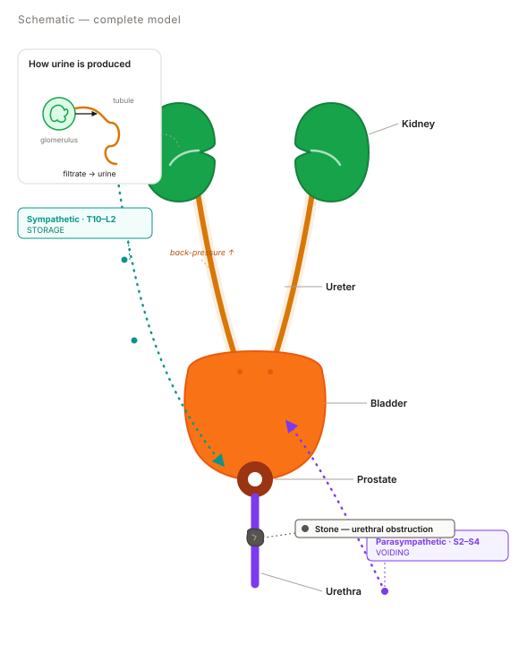
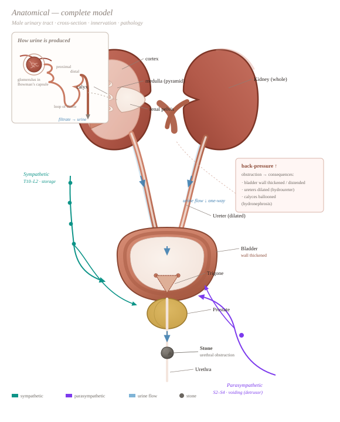

Option A
Schematic system board
Built vector diagram, engine-driven. Flow, innervation, and lesions drawn in place. On-brand with the reference's pipeline diagrams.
One single, modifiable diagram that shows urine production + flow + innervation, and lets you toggle a lesion into the same picture.
each mockup is static but draws every interactive state at once · A & B are built/engine-driven · C is the existing atlas (fixed art)

